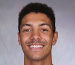
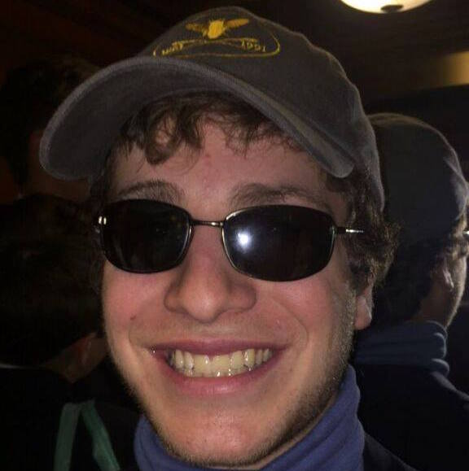
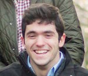
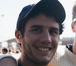
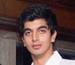
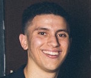
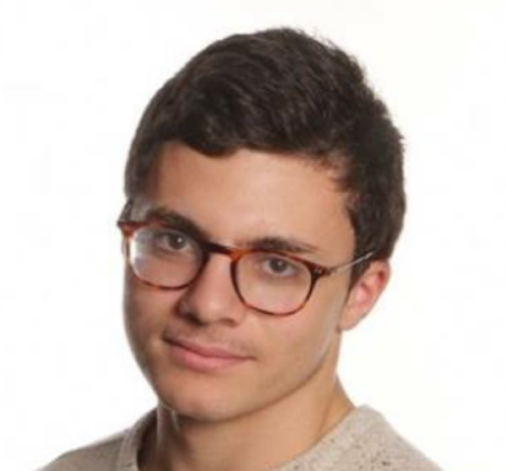
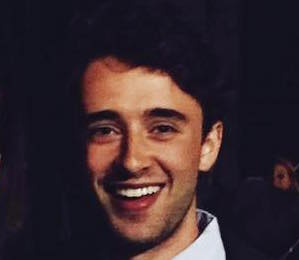
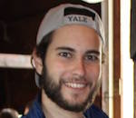

Adam Burton
DC 2018
New Rochelle, NY
Major: History
Activities: The Baker's Dozen, Students for Autism Awareness at Yale (SAAY), Peace and Dialogue Leadership Initiative (PDLI)
Interests: rocks, socks, clocks, robots
Adam Erickson
BR 2018
Wheaton, IL
Major: Applied Math
Activities: FFF at Yale (Fruit Fly Farming at Yale)
Interests: craftsmanship, painting, eating butter
Adrian Lin
JE 2019
Potomac, MD
Major: Psychology
Activities: Varsity Swimming, CCE
Interests: photography, surfing, public health, medicine

Alex Copeland
CC 2019
Los Angeles, CA
Major: Undeclared
Activities: Basketball
Interests: rapping, apple picking

Alex Gerszten
ES 2018
Brookline, MA
Major: Political Science, Latin American Studies
Activities: The Baker's Dozen, C1 Club Soccer, The Politic
Interests: soccer, Tom Brady, microbrewing, David Shimer
Andrew Israel
SM 2020
VP of Development
Old Greenwich, CT
Major: Economics and Mathematics
Activities: Tory Party, MathCounts Outreach, Club Squash, Buckley Program
Interests: running, scuba diving, mini golf
Arix-Yani Fabre
JE 2020
VP of Recruitment
Pembroke Pines, FL
Major: Political Economy
Activities: Black Men's Union, Undergraduate Diversified Investments, Matriculate, Undergraduate Journal of Economics and Politics
Interests: green eggs, ham, finance, sports, cryptocurrencies
Austin Strayhorn
CC 2019
Suitland, MD
Major: Ethics, Politics, & Economics
Activities: Urban Improvement Corps, A Leg Even, Black Men's Union
Interests: outdoor sports, music, technology
Bedel Saget
CC 2018
Huntington Station, NY
Major: Economics
Activities: Club Sports Office, Club Basketball, Black Men's Union, Reproductive Rights Action League, Undergraduate Diversified Investments
Interests: education, basketball, Netflix, Chinese food, collecting stamps, feeding stray cats
Bennett Byerley
SY 2019
Chapel Hill, NC
Major: Ethics, Politics, & Economics
Activities: YCC, Yale Launch, Verb Energy, SoCo, FOOT
Interests: College basketball, baseball, football, backpacking, politics, entrepreneurship
Berk Manav
MC 2018
All-Time VP Flex
Istanbul, Turkey
Major: Economics, Mechanical Engineering
Activities: American Society of Mechanical Engineers, Yale Leadership Institute, Undergraduate Energy Club, Entrepreneurial Institute, Yale European Undergraduates, Sabrosura
Interests: Sailing, water skiing, swimming, snowboarding, playing the guitar, card magic, theater, architecture, energy, tech
Brian Dolan
CC 2020
Bethesda, MD
Major: Physics
Activities: Varsity Football, Matriculate, IM Sports
Interests: art
Caleb Kassa
CC 2020
Suwanee, GA
Major: American Studies
Activities: Club Basketball, Jones-Zimmerman Academic Mentoring Program, Black Men's Union
Interests: tutoring, mentorship
Calvin McCafferty
SM 2020
Brother Coordinator
Philadelphia, PA
Major: Mathematics
Activities: Men's Squash
Interests: politics, history

Chad Hilliard
SM 2018
Brooklyn, NY
Major: Art
Activities: Vision
Interests: photography, Japanese comics
Charles Vojta
PC 2019
Apparel Coordinator
Minneapolis, MN
Major: Economics, Political Science
Activities: YUCG, Debate, SoCo
Interests: Philadelphia sports teams, running, cooking, reading
Chris Quazzo
TC 2019
Chicago, IL
Major: American Studies
Activities: Yale Dramatic Association, The Baker's Dozen, FOOT
Interests: Theatre, Comedy, Tennis, Half-Hour Sitcoms, Sour Patch Watermelons
Cooper Burrill
SM 2019
San Jose, CA
Major: Economics
Activities: Varsity Swimming
Interests: Anything for the boys, skiing, wakeboarding
Daniel Dager
BR 2020
Miami, FL
Major: Ethics, Politics, & Economics
Activities: Yale Daily News, Philosophy Review, Undergraduate Journal for Economics and Politics, Matriculate
Interests: cheesecake, coffee, sleeping in, curating my Spotify playlists, watching art house cinema, playing guitar, sleeping in
Daniel Rice
PC 2020
Sydney, Australia
Major: Undecided
Activities: Rugby, Debate, Model UN, Sketch Comedy
Interests: We just hooked up a dart board in our suite using command strips and dental floss so I'm spending a lot of time working on my trick shots and watching clips of the pros hit 180s like it's a walk in the park.
Daniel Wasserman
DC 2019
Scarsdale, NY
Major: Humanities, Political Science
Activities: Buckley Program, American Enterprise Institute, Yale Friends of Israel
Interests: Yankees, Knicks, University of Tennessee football, the Grateful Dead
David Shimer
DC 2018
Chappaqua, NY
Major: History
Activities: Yale Daily News, History Undergraduate Advisory Council
Interests: journalism, foreign policy, UberEATS, clay turtles, tennis, Russian
Drew Tomback
BR 2020
New York, NY
Major: Economics
Activities: TAMID Group, Economic Review
Interests: searing scallops for the brotherhood

Dylan Wrobel
DC 2018
Brooklyn, NY
Major: History
Activities: Mentor at Manson Youth Correctional Facility, WYBC Radio
Interests: music, film, energy
Ed Stolarski
ES 2019
Weston, CT
Major: Undeclared
Activities: Varsity Swimming, Undegraduate Diversified Investments
Interests: America
Elias Vere Nicoll
SY 2018
London, UK
Major: Global Affairs
Activities: European Undergraduates, Polo
Interests: Real Estate

Elias Mastakouris
SY 2018
Sea Cliff, NY
Major: Political Science, History
Activities: New Haven City Government, Yale Dems, Squash Haven
Interests: America, running, international relations
Eric Benninghoff
BK 2020
Weston, CT
Major: Political Science
Activities: Class Council, Yale TV, Students for Autism Awareness, Tour Guide, FOOT
Interests: investigative journalism, broadcast news
Forrest Simpson
SY 2019
VP of Communications
Larchmont, NY
Major: History
Activities: Naval NROTC, Roosevelt Institute, Undergraduate Diversified Investments
Interests: Hiking, Running, Swimming, Security studies, Politics
Garrett Gile
BK 2019
Chaplain
Longwood, FL
Major: Economics
Activities: Undergraduate Journal of Economics and Politics, Club Lacrosse, Yale Daily News
Interests: Virtue, Diligence, Brotherly Love
George Castillo
DC 2020
Falls Church, VA
Major: Undecided
Activities: Baker's Dozen, IM secretary
Interests: ballin, Duke Basketball
George de Mars
BK 2019
Falls Church, VA
Major: Economics
Activities: Elmseed Enterprise Fund, Econ and Math tutor
Interests: IM and pickup basketball, FIFA, Netflix
Hacibey Catalbasoglu
DC 2019
New Haven, CT
Major: Global Affairs
Activities: Heavyweight Crew, SoCo, Racewalking 2016 Rio Olympics Medalist
Interests: New Haven politics, James Harden's beard, How to get a bid from Theta

Harrison Tracy
JE 2018
Wyndmoor, PA
Major: Economics, Cognitive Science
Activities: C Hoops Intramurals
Interests: crosswords, cooking videos on YouTube, HGTV
Idris Mitchell
SY 2018
Columbia, MD
Major: Political Science
Activities: Black Men's Union, Club Basketball, Admissions Recruitment Coordinator
Interests: piano, basketball, traveling, foreign language, mentorship/leadership development
Ilo Zak
SM 2018
Crozet, VA
Major: Global Affairs
Activities: Refugee Project, WYBC Radio, IM ball
Interests: quality filmmaking, magnets
Jack Williamson
BR 2018
Newport Beach, CA
Major: War and Society
Activities: Music, Martial Arts, Marine Corps Officer Candidate
Interests: history, intelligence work, politics
Jasper Prouvost
JE 2019
President
Chevy Chase, MD
Major: Global Affairs
Activities: Dwight Hall Socially Responsible Investment Fund, Elmseed Enterprise Fund
Interests: cello, hockey, squash

Jay Losty
DC 2019
VP of Housing
Radnor, PA
Major: History
Activities: Men's Squash, Roosevelt Institute, Squash Haven
Interests: Philadelphia Eagles, Golf, Poker
Johanan Knight
TC 2019
Chapter Coordinator
Norwalk, CT
Major: Undeclared
Activities: FOOT, WYBC Radio
Interests: running, patterned clothing
Jon Greenberg
TC 2019
Scarsdale, NY
Major: History
Activities: Yale Daily News, WYBC Radio
Interests: NY Jets, hip hop, walks on the beach
Jordi Bofill
DC 2019
Guaynabo, Puerto Rico
Major: Economics
Activities: Club Tennis, Launch, Roosevelt Institute
Interests: Tennis, Soccer, FC Barcelona, Going to the beach, Economic Research
Juan Federico Trigo
SY 2019
VP of Programming
Weston, FL
Major: Economics, History
Activities: C1 Club Soccer, Undergraduate Consulting Group, Club of Argentine Students at Yale, Tierralta Latin America
Interests: Playing and watching soccer, graphic design, fashion, listening to electronic music, philosophy

Jude Alawa
BR 2019
Miami, FL
Major: Molecular Biophysics & Biochemistry, Global Affairs
Activities: International Relations Association, Rotaract, Students Organized for Syria, FOOT, Instrumental Connection
Interests: medicine, foreign policy
Logan Lewis
TC 2019
Washington, DC
Major: Ethics, Politics, & Economics
Activities: Baker's Dozen, Black Men's Union
Interests: finance, dancing, the Silk Road
Max Lukianchikov
JE 2020
VP of Development
San Francisco, CA
Major: Mathematics
Activities: Magic Society, Undergraduate Jazz Collective, Rugby
Interests: music festivals, dice enthusiast, cards
Max Martin
BK 2018
New Haven, CT
Major: History of Science, Medicine & Public Health
Activities: Men's Squash, Chabad
Interests: RC Celta de Vigo, reading, traveling, philately
Michael Carden
SM 2018
Port Washington, NY
Major: Political Science
Activities: YMUN, Spike Ball
Interests: NY Mets, French cuisine, airballs

Mrinal Kumar
SM 2018
Wesport, CT
Major: Biomedical Engineering
Activities: Prosthetic research, Yale Daily News, Cricket Team
Interests: friendship
Nick Adeyi
TD 2019
Washington, DC
Major: Chemical Engineering
Activities: Black Men's Union, RUMPUS, Student Investment Group, Undergraduate Energy Club, NSBE, Davenport Pops Orchestra
Interests: renewable energy & sustainability, parkour, violin, reading

Nick Helfand
SM 2019
VP of Programming
Chicago, IL
Major: Political Science
Activities: Cotocachi Honey LLC, YHHAP, William F. Buckley Fellow
Interests: entrepreneurship, playing golf poorly, traveling, Tottenham Hotspur F.C, spicy food
Paddy Gavin
SY 2018
Sligo, Ireland
Major: History
Activities: Yale Daily News, Pitnacree, Yale School of Music Concert Office
Interests: Politics, current affairs, Elias Vere Nicoll, journalism, music, doggos, languages, travel, my private email server

Parth Bhatia
BK 2020
Delhi, India
Major: Economics and Mathematics
Activities: Varsity Squash, Club Chess, Squash Haven, OIS
Interests: playing the guitar, debate, reading

Patrick Reed
CC 2018
Shaker Heights, OH
Major: History
Activities: RYSA, Yale Herald, BMU, Mentor at Manson Youth Correctional Facility
Interests: Watching slasher films, reviewing food I eat, swimming, listening to music
Roland Brewster, Jr.
JE 2020
New York, NY
Major: Political Science, History
Activities: Undergraduate Journal of Economics and Politics, Black Men's Union, Undergraduate Diversified Investments
Interests: playing/watching soccer, listening to music, cleaning my timbs, feeding stray animals
Sammy Burton
DC 2020
New Rochelle, NY
Major: Cognitive Science
Activities: Baker's Dozen, Infant Cognition Center Research Assistant, Manson Youth Institute Tutoring Program
Interests: golf, skiing, reading, music
Scott Hicks
PC 2018
San Luis Obispo, CA
Major: History, Cognitive Science
Activities: Mock Trial, Model United Nations Team, Tour Guide
Interests: listening to music, wearing sandals, stargazing, do we have free will?
Se Yong Park
SY 2020
Palisades Park, NJ
Major: Ethics, Politics, & Economics
Activities: KASY, AACC, Undergraduate Diversified Investments
Interests: sports
Sean Singleton
TC 2019
VP of Community Service
New York, NY
Major: History
Activities: WYBC Radio, Club Golf, Undergraduate Diversified Investments
Interests: skiing, metro PCS, NY Rangers, keds
Sebastian Rivero
BR 2019
Darien, CT
Major: Mechanical Engineering
Activities: WYBC Radio, Demos teacher, Yale Splash
Interests: hiking, park skiing, camp counseling
Sebi Vars
TD 2020
Montclair, NJ
Major: Undecided
Activities: C1 Club Soccer, WYBC Radio
Interests: skateboarding, filmmaking, Se Yong's smolder
Si Affron
BR 2020
VP of Fundraising
Philadelphia, PA
Major: Humanities
Activities: Undergraduate Journal of Economics and Politics, The Politic, Matriculate
Interests: philosophy, college basketball, Yankees, FIFA

Simon Soros
SM 2020
London, UK
Major: Undecided
Activities: The Opening, Urban Improvement Corps, Yale Rugby, The Politic, LinkedIn Premium
Interests: @themonopolistic firm
Spencer Marks
DC 2019
VP of Finance
Chicago, IL
Major: Economics
Activities: Economics Research Assistant, Undergraduate Diversified Investments, High School Tutor
Interests: reading, travel, skiing, Chicago Cubs
Stephen Wang
BR 2019
Houston, TX
Major: Molecular Biophysics & Biochemistry
Activities: Undergraduate Research Association, Simplex Sciences, Guild of Carillonneurs
Interests: chemistry, biology, tennis, lacrosse, reading, playing the piano, football, writing, watching movies
Steven Lewis
BR 2018
Scarsdale, NY
Major: Molecular, Cellular & Developmental Biology, History
Activities: YSO, Camp Kesem, CCE
Interests: Mets, Ryan Gosling, the tuba, the immune system
Teddy Sokoloff
TC 2019
Los Angeles, CA
Major: Global Affairs
Activities: Baker's Dozen, YCBA Tour Guide
Interests: saving the bees

Tripp Kaelin
SY 2018
Boston, MA
Major: History
Activities: Men's Squash, Squash Haven
Interests: sustainable food & agriculture, education, new media
Tyler Morley
CC 2018
President Emeritus
Boulder, CO
Major: Economics
Activities: C1 Club Soccer, FOOT, Sports Analytics Group, FERDA Group at Yale
Interests: FIFA, spinning
Tyler Patterson
JE 2020
Los Angeles, CA
Major: Economics, Political Science
Activities: Club Basketball, Yale Daily News, Club Sports Office
Interests: Netflix, EDM, rap music, sneakers, Spanish, Beatles, Insomnia Cookies, complaining
Victor José Padilla Castellanos
SM 2020
VP of Recruitment
Guatemala
Major: Political Science
Activities: Squash Haven, Yale Black Men's Union, YDN Sports Contributor, Hemispheres Teacher
Interests: basketball, sports analytics
Will Ettinger
SY 2020
New York, NY
Major: Economics
Activities: Polo, Club Squash, Wenzels
Interests: New York Yankees, poker, playing squash socially, not chess, brotherly love
Will Field
ES 2020
Historian
Gladwyne, PA
Major: Ethics, Politics, & Economics
Activities: Student Investment Group, Tory Party, Club Squash, Buckley Program
Interests: entrepreneurship, sports, government
Will Magliocco
CC 2018
New York, NY
Major: History, Chinese
Activities: China Hands Magazine, FOOT, No Closed Doors, Glee Club
Interests: basketball, skiing, classical music, The Great Outdoors
Will McGrew
CC 2018
New Orleans, LA
Major: Economics, Political Science
Activities: Debate Association, Model UN Team, College Democrats
Interests: Hilary Clinton, foreign languages

Yonatan Zeff
SY 2018
San Francisco, CA
Major: Economics, Physics
Activities: The Viola Question
Interests: dance, comedy, real estate, business
Zach Cohen
CC 2018
New York, NY
Major: History, Political Science
Activities: The Politic, FOOT, gheav, Refugee Project
Interests: Sculptures of Shimer in assorted materials including but not limited to wood, clay, and metal